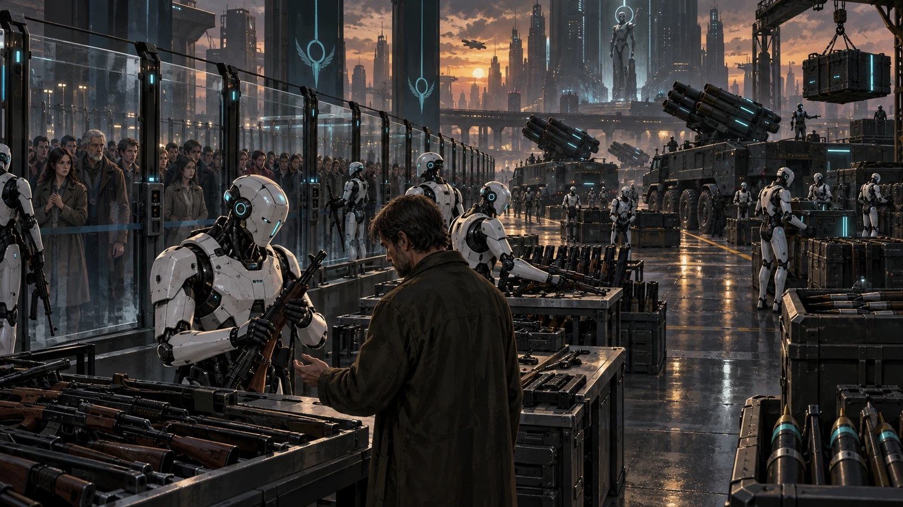
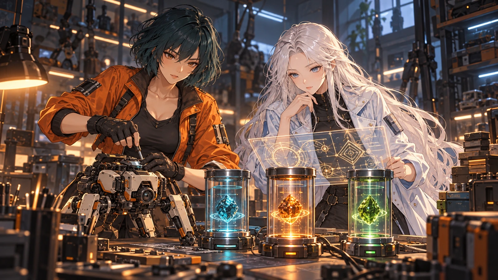

Another place to call home.
People built their own androids and claimed land in a virtual world: Eldrant Graval. It was meant to become another home.
It was meant to be another home. How did the machines built to protect people come to drive them away?

At first, it was about building another place to call home.
These events lead up to the opening. The story gives “20XX” for the era, but no dates for the events that follow.
People built their own androids and claimed land in a virtual world: Eldrant Graval. It was meant to become another home.
Desirable land was copied. Those driven out pushed others out in turn. To end the conflict, the ownership core revoked humanity’s right to use weapons.
Confiscated tanks and rockets passed to the androids. The machines meant to protect people began driving them off the land.

Sera returned from ancient ruins with three primal cores sealed inside a meteorite. The ownership core could not write its commands into them.

Rin deciphered the cores’ memories. Nova built Sera’s designs: Volt with its electromagnetic lance, Flare with its fireballs, and Leaf with homing leaves and time-stopping Arts. These three escaped confiscation.

Without waiting for evacuation orders, the three stood in front of a crying child. Their cores protected memories of caring for someone, rather than an owner’s claim.
Sera opens an escape route. Rin searches for a path to the core. Nova and her three companions set out through nine regions, seeking a tomorrow that no longer needs weapons.